Bridging Human Values and ML#
Bridging Human Values and Machine Learning: Human-Centric Loss Functions in AI
Table of Contents
Human-Centric Design Principles Behavior-Informed Design. Human-Centered Datasets. Perceptual Error Handling
Cognition of Loss functions Understanding the loss function. Types of loss functions. Loss function, group learning
Index and loss function We reduce a data set to one index or several parameters
Human-Centric Design Principles#
Behavior-Informed Processing: Employs algorithms and models that are inspired by or adapted to human behavioral patterns.
Human-Relevant Data Focus: utilizes datasets that reflect real-world human needs, behaviors, and contexts.
Intuitive Error Handling: Incorporates error detection and response mechanisms that align with human intuition and perception.
Transparency and Explainability: Provides clear, understandable explanations for system decisions, helping users build trust and confidence.
Ethical and Inclusive Design: Ensures the system is fair, accessible, and respectful of all users regardless of background or ability.
User-Friendly Interfaces: Designed to be intuitive and accessible, even for users without technical expertise.
Human-Centric: Behavior-Informed Design#
This principle emphasizes the integration of human behavioral insights into system design and decision-making.
Behavioral economic models:#
Prospect theory explains why, when faced with an uncertain event, humans make decisions that do not maximize their expected value.
Example: Game State 1: 100\( with 80% probability and \)60 with 20% probability State 2: Accept 60$ and Bye
Humans select State 2! Mean of State 1 is 92\( and minimum is 60\)
Instead of calculating the “average profit,” the human brain reacts to emotions and fear of loss.
See this: Information Processing & Management, Volume 62, Issue 3, May 2025, 104049
More from Propect theory Pain of loss > Joy of Gain
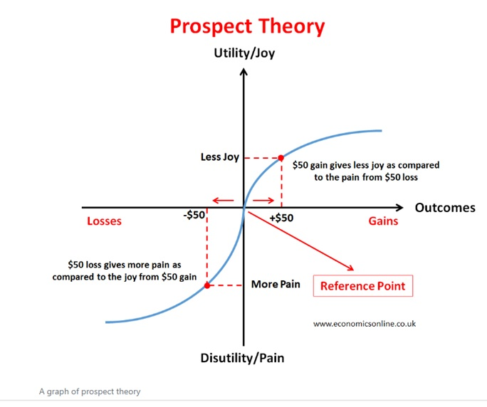
See: [1] 2023 IEEE 29th International Conference on Parallel and Distributed Systems (ICPADS), 26 March 2024, DOI: 10.1109/ICPADS60453.2023.00091 [2] Fuzzy Sets and Systems , Volume 517, 1 October 2025, 109442, https://doi.org/10.1016/j.fss.2025.109442
[3]The Prospect Theory and The Stock Market, Highlights in Business, Economics and Management GAGBM 2023, Volume 11 (2023)
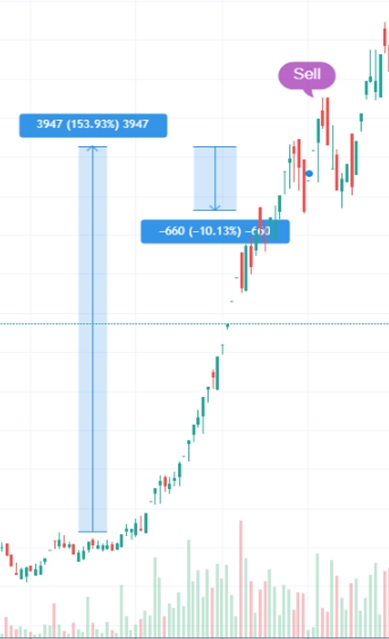
Ensemble Learning#
Ensemble learning enhances predictive performance by combining multiple models, making it effective for both complex problems and varying data sizes. For large datasets, it partitions data to train separate models in parallel, improving efficiency and generalization. When data is limited, it mitigates underfitting and overfitting by aggregating diverse model behaviors. Ultimately, ensembles boost accuracy, robustness, and confidence through collective decision-making.
Diversity-Aware AI Systems#
By incorporating diversity across data, features, and design components, AI systems can achieve enhanced performance and more effectively serve a broader range of users.
See: Engineering Applications of Artificial Intelligence, Volume 154, 15 August 2025, 110888, https://doi.org/10.1016/j.engappai.2025.110888
Human Centric: Human-Relevant Data Focus#
That is, the processing of data related to humans.
Explanation with Example:
Optical flow : How each pixel moves#
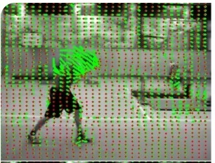
Human-centric motion analysis is specifically focused on and tailored to the analysis of human motion.
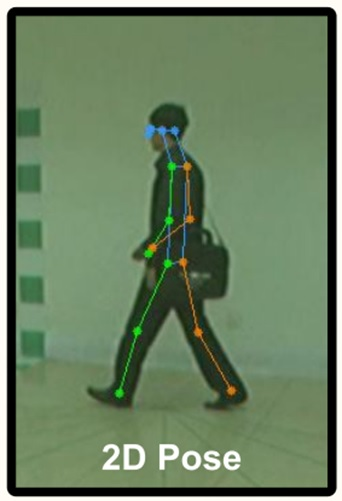
a human-centric approach dynamically preserves relevant human motion while filtering out irrelevant background movement (such as tree leaves).
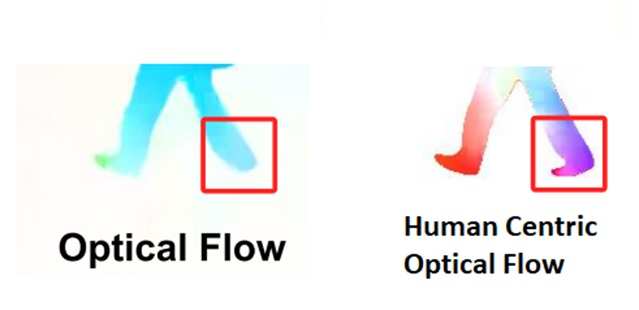
See: IEEE TRANSACTIONS ON PATTERN ANALYSIS AND MACHINE INTELLIGENCE, VOL. 47, NO. 2, FEBRUARY 2025
Action recognition guided by skeletal analysis#
recognizes human actions by analyzing skeletal data—like the positions and movements of joints and bones
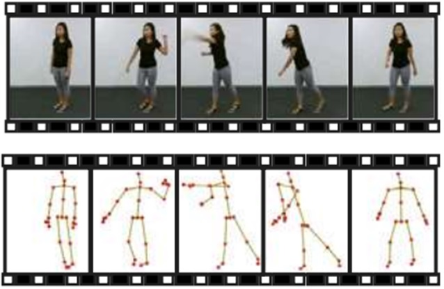
See: Expert Systems With Applications, Volume 239, 2024, Article number 122314
Human Centric: Intuitive Error Handling#
Intuitive error management refers to the design of systems (especially in machines or intelligent systems) that take into account how humans perceive and tolerate errors.
Error Management Theory (EMT):#
Error Management Theory (EMT) assumums that humans have evolved biases to favor less costly errors under uncertainty. In pattern recognition, this leads to a tendency toward false positives over false negatives to enhance survival.
Daniel Kahneman focused more on cognitive economics and rationality; EMT interprets biases from an evolutionary survival perspective.
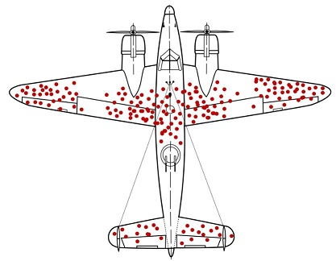
See:The Error of God: Error Management Theory, Religion, and the Evolution of Cooperation Dominic D.P. Johnson, S.A. Levin (ed.), Games, Groups, and the Global Good, Springer Series in Game Theory, DOI: 10.1007/978-3-540-85436-4 10, c Springer Physica-Verlag Berlin Heidelberg 2009
A Set of Functions Derived from Common Intuitive Errors#
Squared Error: Humans tend to be more sensitive to large errors than to small ones. For example, a single error of 100 units is perceived as significantly worse than ten errors of 10 units each.
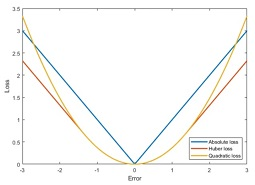
Epsilon-Insensitive (ε-Insensitive) Loss Function:
In some situations, people are indifferent to small errors. For instance, a temperature prediction error of 0.5°C is typically negligible for the average person
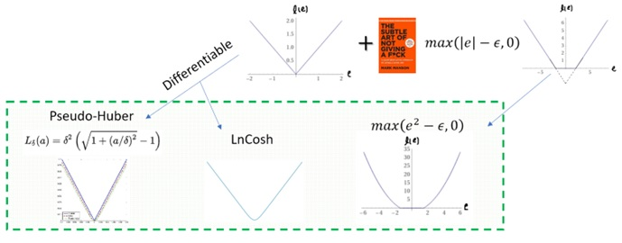
See:Expert Systems with Applications, Available online 8 May 2025, 128085, https://doi.org/10.1016/j.eswa.2025.128085
Huber Loss Function
Reflects a combination of human responses to small and large errors: For small errors: behaves like Square Loss, showing moderate sensitivity. For large errors: behaves like Absolute Error, penalizing them, but less harshly than MSE.
Psychological Root: Strikes a balance between the desire for accuracy and the need for robustness to noise or outliers.
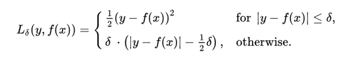
See: IEEE Transactions on Geoscience and Remote Sensing ( Volume: 62), 10.1109/TGRS.2024.3370966
Quantile (Pin Ball) Loss Function
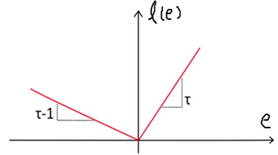
The psychology and philosophy of the Pinball Loss Function (also called Quantile Loss) offers a fascinating lens into how we model uncertainty, fairness, and asymmetric costs — all with deep psychological and philosophical implications. (a concept also seen in Prospect Theory)
Psychological and Philosophy Interpretation:
1-Asymmetric Risk Perception Humans often fear certain types of mistakes more than others — we are not symmetric in how we perceive risks. (For example: Weather Forecast and Event Planning)
2-Loss Aversion Much like in Kahneman and Tversky’s work, the pinball loss aligns with the idea that we may be more sensitive to losses in one direction than the other. (Prospect Theory)
3-Fairness(Equality) and Justice The function’s flexibility to weigh errors differently reflects real-life ethical choices.
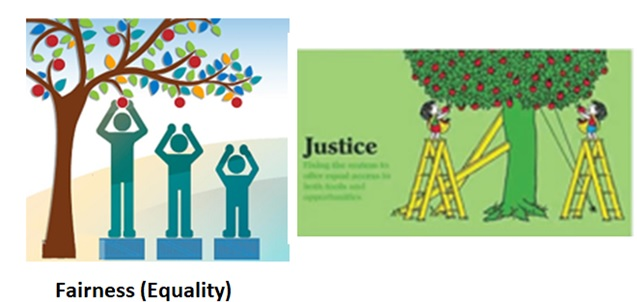
See: Applied Soft Computing , Volume 94, September 2020, 106473, https://doi.org/10.1016/j.asoc.2020.106473
Cognition of Loss functions#
The first question is why do we think of using the loss function?
Facts like death, poverty, pain, Short life, Fear, and so on, are painful losses.
Losses in buying and selling, stock market, marriage, partnership, living.
Is loss function a measure of the error magnitude?
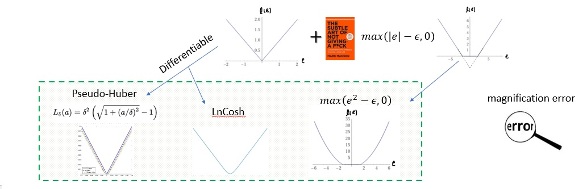
Loss from LnCosh#
To facilitate differentiability of the absolute error function, use the ln(cosh) function as a smooth approximation.
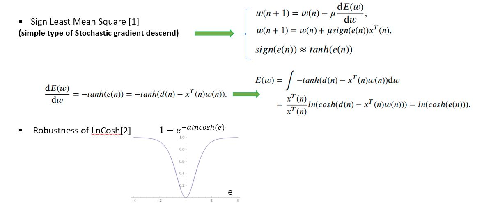
See: [1] Verhoeckx, N., van den Elzen, H., Snijders, F., & van Gerwen, P. (1979). Digital echo cancellation for baseband data transmission. IEEE Transactions on Acoustics, Speech, and Signal Processing, 27(6), 768–781. [2] ‘Robust classification via clipping-based kernel recursive least lncosh of error,’ Expert Systems With Applications 2022.
Loss function, Ensemble Learning#
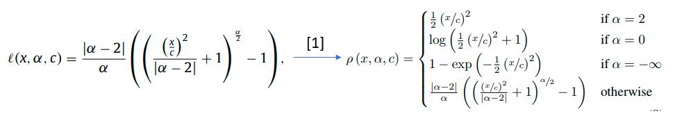
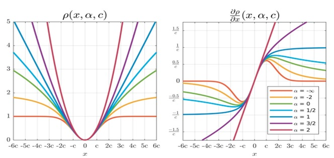
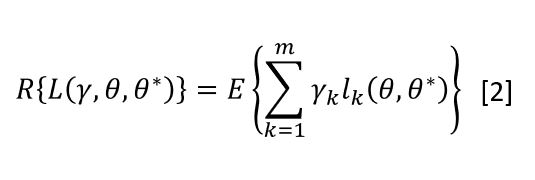
See: [1] Jonathan T. Barronm, ‘A General and Adaptive Robust Loss Function,’ 2019 IEEE/CVF Conference on Computer Vision and Pattern Recognition (CVPR) [2] et al, Sadoghi ,’RELF: Robust Regression Extended with Ensemble Loss Function,’ Applied Intelligence, 2019
Index and Loss Function#
Index for Data Description
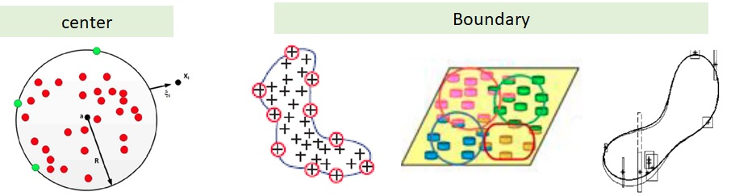
Some Examples: Modelling with Lack of described data [1] Modelling of Huge Data via EM [3] Behavioral Description in classifier fusion[2] Inaccurate data description [4] For finance[5]
See:
[1] ‘Prediction of liquefaction potential based on CPT up-sampling’, Computers & Geosciences, 2012
[2], ‘Creating and measuring diversity in multiple classifier systems using support vector data description’, Applied Soft Computing, 2011
[3], ‘Sparsity-aware support vector data description reinforced by expectation maximization’, Expert System, 2021
[4] ‘ An extension to fuzzy support vector data description’, Pattern Analysis and application 2012
[5], ‘ An Empirical Modeling of Companies Using Support Vector Data Description’, 2010
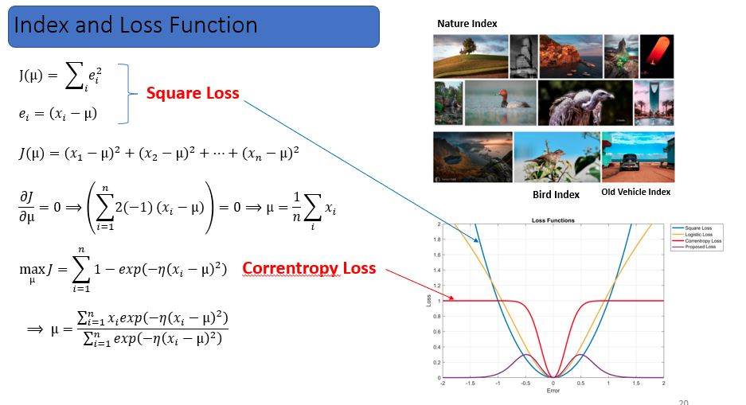
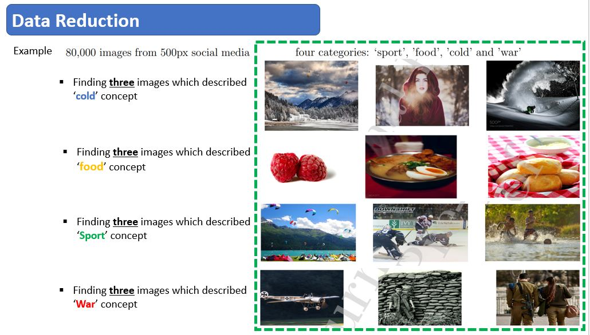
Social Fairness Considerations#
Embeds concepts such as equity, equality, and justice to ensure that processing and outcomes are not only accurate but also socially responsible.
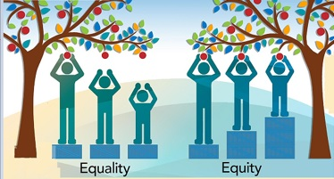
Equality ensures uniform treatment and access.
Equity adjusts for individual needs and contexts to promote fairness.
Justice addresses and corrects systemic imbalances in data and algorithms.
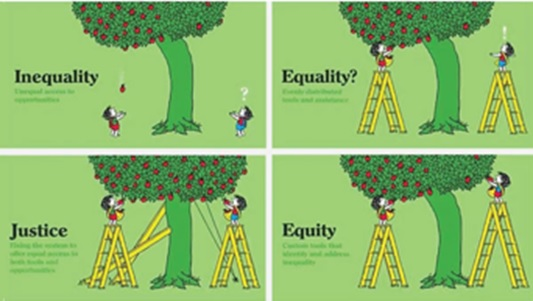
See: Expert Systems with Applications, Volume 269, 15 April 2025, 126219